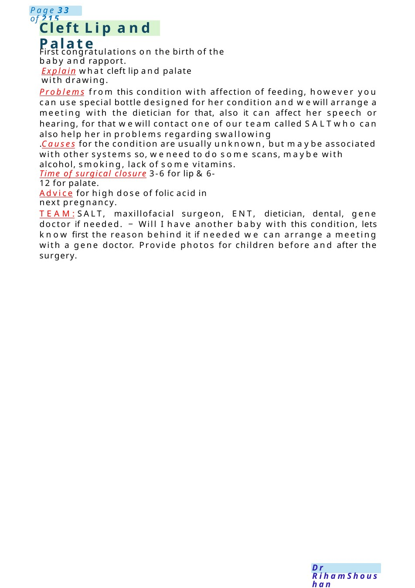

Cleft Lip and Palate
First congratulations on the birth of the baby and rapport. Explain what cleft lip and palate with drawing.
Scenario Summary
First congratulations on the birth of the baby and rapport. Explain what cleft lip and palate with drawing.
Full Original Scenario

Cleft Lip and Palate
First congratulations on the birth of the baby and rapport.
Explain what cleft lip and palate with drawing.
Problems from this condition with affection of feeding, however you can use special bottle designed for her condition and wewill arrange a meeting with the dietician for that, also it can affect her speech or hearing, for that wewill contact one of our team called SALTwho can also help her in problems regarding swallowing
.Causes for the condition are usually unknown, but maybe associated with other systems so, weneed to do some scans, maybe with alcohol, smoking, lack of some vitamins.
Time of surgical closure 3-6 for lip &6-12 for palate.
Advice for high dose of folic acid in next pregnancy.
TEAM:SALT, maxillofacial surgeon, ENT, dietician, dental, gene doctor if needed. − Will I have another baby with this condition, lets know first the reason behind it if needed we can arrange a meeting with a gene doctor. Provide photos for children before and after the surgery.

Shoulder Dystocia
What is shoulder dystocia? Shoulder dystocia is a birth injury (also called birth trauma) that happens whenone or both of a baby’s shoulders get stuck inside the mother’s pelvis during labor and birth. In most cases of shoulder dystocia, babies are born safely. But it can cause serious problems for both momand baby. Dystocia means a slow or difficult labor or birth. It’s often hard for health care providers to predict or prevent shoulder dystocia. They often discover it only after labor starts.
Risk factors for shoulder dystocia: Macrosomia, Having preexisting diabetes or gestational diabetes , Having shoulder dystocia in a previous pregnancy,Being pregnant twins, triples or other multiples, Being overweight or gaining too muchweight during pregnancy. Getting a medicine called oxytocin to induce your labor , having a very short or very long second stage of labor, epidural analgesia, assisted vaginal birth by instruments.
Complications: to the baby : Fractures to the collarbone and arm, Damage to the brachial plexus nerves, Lack of oxygen to the body (also called asphyxia). In the most severe cases, this can cause brain injury or even death.
To the mother: Postpartum hemorrhage, Serious tearing of the perineum, Uterine rupture.
Treatment: Press your thighs up against your belly. This is called the Mc Roberts maneuver, Press on your lower belly just above your pubic bone. This is called suprapubic pressure, help your baby’s arm out of the birth canal, reach up into the vagina to try to turn your baby. Orturn you over so you’re on all fours (on your hands and knees), Give you an episiotomy. This is not done routinely but only in cases in which a larger opening to the vagina is helpful, and the incision won’t affect the baby, do a c-section, other surgical procedures or break your baby’s collarbone to release his shoulders. These are done only in severe cases of shoulder dystocia that aren’t resolved by other methods.